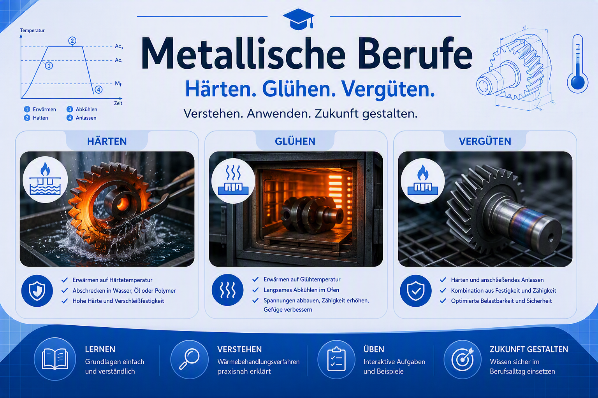

Medieninhaber, Herausgeber und für den Inhalt verantwortlich:
Josef Wallmann
c/o Christine Weißenbacher
Gaißau 172
5425 Krispl
Österreich
Kontakt:
E-Mail: BS.Hallein@gmail.com
Hinweis:
Dieses Lernangebot ist ein privates, nicht kommerzielles Projekt und dient ausschließlich
Bildungszwecken. Es besteht kein offizieller Zusammenhang mit einer Schule oder sonstigen
Bildungseinrichtung.
Verantwortlicher:
Josef Wallmann, c/o Christine Weißenbacher, Gaißau 172, 5425 Krispl, Österreich
E-Mail: BS.Hallein@gmail.com
Besuch der Website und Hosting:
Diese Website wird mit GitHub Pages bereitgestellt. Beim Aufruf verarbeitet GitHub nach eigener
Auskunft die IP-Adresse der Besucher:innen und kann weitere technische Verbindungsdaten erfassen,
insbesondere zur Bereitstellung und Sicherheit des Dienstes. Die Verarbeitung dient dem Betrieb
und der Absicherung der Website. Soweit ich dafür datenschutzrechtlich verantwortlich bin, stütze
ich sie auf mein berechtigtes Interesse gemäß Art. 6 Abs. 1 lit. f DSGVO an einem sicheren und
funktionsfähigen Webangebot. Empfänger ist GitHub als Hosting-Anbieter; eine Verarbeitung durch
GitHub-Unternehmen in den USA oder anderen Staaten kann nicht ausgeschlossen werden. Informationen
zu Zwecken, Speicherdauer und möglichen internationalen Übermittlungen finden Sie in der
Datenschutzerklärung von GitHub und in der
Dokumentation zu GitHub Pages. Auf die dortige
Verarbeitung und deren konkrete Speicherdauer habe ich keinen unmittelbaren Einfluss.
Lokale Darkmode-Einstellung:
Wenn Sie den Darkmode aktivieren oder deaktivieren, speichert die Anwendung Ihre Auswahl im
Local Storage Ihres Browsers, damit sie beim nächsten Besuch erhalten bleibt. Dieser Eintrag
wird nicht an mich übermittelt und bleibt gespeichert, bis Sie ihn in den Website-Daten Ihres
Browsers löschen. Sie können den Darkmode auch verwenden, ohne diese Einstellung dauerhaft
zu speichern, indem Sie die Website-Daten nach dem Besuch löschen.
Die Anwendung selbst verwendet keine Analyse- oder Werbedienste und setzt keine eigenen Cookies.
Kontaktaufnahme:
Wenn Sie mich per E-Mail kontaktieren, verarbeite ich die von Ihnen übermittelten Angaben, um Ihre
Anfrage zu beantworten. Rechtsgrundlage ist mein berechtigtes Interesse an der Bearbeitung
eingehender Anfragen (Art. 6 Abs. 1 lit. f DSGVO); bei einer Anfrage im Zusammenhang mit einem
Vertragsverhältnis kann Art. 6 Abs. 1 lit. b DSGVO maßgeblich sein. Die Daten werden gelöscht,
sobald die Anfrage abschließend bearbeitet ist, sofern keine gesetzlichen Aufbewahrungspflichten
entgegenstehen oder die Daten zur Geltendmachung, Ausübung oder Verteidigung von Rechtsansprüchen
benötigt werden.
Ihre Rechte:
Sie haben im Rahmen der gesetzlichen Voraussetzungen das Recht auf Auskunft, Berichtigung,
Löschung, Einschränkung der Verarbeitung, Datenübertragbarkeit und Widerspruch gegen eine
Verarbeitung auf Grundlage berechtigter Interessen. Zur Ausübung Ihrer Rechte können Sie mich
unter der oben genannten E-Mail-Adresse kontaktieren. Sie haben außerdem das Recht, eine
Beschwerde bei der österreichischen
Datenschutzbehörde
einzubringen.
Haftungsausschluss:
Die Inhalte wurden sorgfältig erstellt. Für die Richtigkeit und Vollständigkeit der Aufgaben und
Lösungen wird keine Gewähr übernommen.